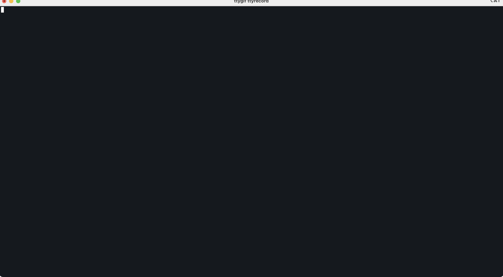

- Aprendiendo un nuevo lenguaje
- El aprendizaje no-lineal
- Trazando un estado inicial para el proyecto
- Sentando las bases en loot.py
- Scrapper para generar nuestros archivos .json
- No nos olvidemos del oro
- Gemas everywhere
- Tuneando el script para recibir argumentos y lanzar n simulaciones
- Palabras finales
- Fuentes
Aprendiendo un nuevo lenguaje
La metodología que uso para aprender un nuevo lenguaje es hacer cosas con el, suena simple pero no lo es del todo. Este metodo no va a funcionar con aquellas personas que esten empezando en el mundo de la programación sino para aquell@s que ya saben programar y quieren pivotar a otro lenguaje, probar otros paradigmas, etc.
Podría embaucarme en el eterno viaje de tutoriales en video, articulos de blog, documentación y un largo coñazo mas pero prefiero tener una idea en mente y proyectarla con el nuevo lenguaje e ir aprendiendo la sintaxis y conceptos sobre la marcha, tan rudimentario como efectivo.
Después de llevar largas horas farmeando en diablo para hacerme las builds de la temporada 28 para todos los personajes, me apetecía simular un sistema de loot parecido al de diablo a niveles bastante reduccionistas claro está, el de diablo 3 tiene que conllevar mucha mas complejidad pero para empezar me vale.
Algo muy distinto al tipico TODO list que ya aburre infinito.
Puedes acceder al repositorio completo aquí: https://github.com/s3r0s4pi3ns/python-diablo3-loot-system
El aprendizaje no-lineal
A mi personalmente no me funciona el aprendizaje lineal en el que te lees los capitulos por orden númerico ascendente, prefiero hacer una pequeña mezcla de teoria-práctica en espacios cortos de tiempo mientras voy hilvanando los conceptos para conseguir un mapa mental adecuado, por ejemplo, leo el concepto de diccionario en python y al momento me pongo a teclear para crear memoria muscular e interiorizar esa teoría creando e interaccionando con un diccionario.
Hago un enfoque similar para este proyecto de crear el sistema de loot en python, voy desglosando las funcionalidades que quiero ir aplicando antes de escribir código, un poco de música y a enfrentarme con lo desconocido.
Enumerando las reglas para alcanzar nuestro objetivo
Sin grandes complicaciones, quiero tener la posibilidad de ejecutar n simulaciones y me devuelva la información de las cantidades looteadas para ver si los porcentajes de drop se asocian a un buen gameplay donde se premia la constancia. Vamos a ponernos en contexto con las características principales que dispone el sistema de loot enumerando los items y los condicionantes que lo rodean:
Equipamiento
Tener claro el equipamiento que puede disponer nuestro personaje nos acercará a una mayor precision y realismo a la hora de crear nuestras loot tables:
- Yelmo
- Peto
- Hombros
- Brazos
- Cinto
- Piernas
- pies
- 2 Huecos para anillos
- 1 Hueco para amuleto
- Arma 2 manos
- Arma 1 mano
- Soporte 1 mano (Off-hand), Escudo, orbe, mascara de vodoo… (si utilizas arma 1 mano puedes utilizar la otra para un item de este tipo)
Esto influye a la hora de seleccionar un rango amplio de objetos a la hora de lootear por lo que da una experiencia mas variada
Rareza del objeto
La rareza del objeto se divide en: Normal, Magico, Raro, Legendario, Legendario ancestral, Legendario ancestral primigenio, Conjunto (ancestral, primigenio)
- Las piezas de conjunto tienen efectos adicionales si se equipan varias de las piezas.
- El equipamiento tiene su propio nivel que va acorde con el personaje, esto quiere decir que las estadísticas generadas del objeto tendran esta limitación y habra que formar un calculo para ello.
- Piezas de conjunto, ancestrales, primigenios solo lootean a partir del nivel 70 de personaje, el equipamiento que se lootea siempre debe ser menor o igual que el actual nivel del personaje (si eres nivel 40, solo te aparecen raros o legendarios de <= 40)
- Los objetos de tipo ancestral o primigenio solo se podran acceder si se jugan fallas de nivel superior +70 en dificultades superiores a tormento I
- Si en el loot aparece un legendario/conjunto, hay una posibilidad 1 entre x (habra que definir x) de que este sea ancestral o primigenio los cuales pueden ofrecer estadisticas mas altas.
Exclusividad de equipo
Hay equipo global que puede usar cualquier personaje pero su generación será diferente, si el atributo principal es inteligencia, estos objetos vendran con propiedades mágicas acorde a este atributo o habilidades que solo la clase puede utilizar.
Las piezas de conjunto se desbloquean en base a la clase del personaje que estamos utilizando, si usamos un mago solo lootearemos sets equipamiento para esta clase en particular. Se que hay veces que una pieza de conjunto de otra clase se lootea pero por simplificar la lógica no voy a implementar esta característica en el sistema de loot
Nivel y dificultad
El nivel y la dificultad en la que se está jugando influye en los porcentajes de loot para los objetos legendarios y de conjunto.
Rango de estadisticas
El equipamiento se lootea con unas estadísticas aleatorios siempre en base a unas reglas básicas que ese objeto puede admitir y pueden ser por ejemplo, entre 700 y 1000 de daño, 4 propiedades magicas aleatorias, inteligencia del personaje * 0.4 + (400 ~700) y un largo etc.
Origen del loot
Este apartado se refiere a si se ha abierto un cofre, matado un enemigo, completado un evento. Segun el origen, el proceso de loot recibirá ciertas reglas y calculos especiales para ese loot en especifico. Usaremos claves en el formato origen:tipo que seran una via de acceso a nuestro pool y su forma de generarse.
Ejemplos:chest.normal, greater_rift.killed_guardian, chest.diabolic
Trazando un estado inicial para el proyecto
Como cualquier inicio necesitamos un punto de partida para ir pivotando y desarrollando sobre el para ver hasta donde podemos llegar. Teniendo las reglas basicas anteriores en mente vamos a crear nuestras primeras carpetas y archivos:
.
├── character.py
├── data
│ ├── equipment
│ │ ├── character_set_equipment.json
│ │ ├── legendary_equipment.json
│ │ ├── magic_equipment.json
│ │ ├── normal_equipment.json
│ │ └── rare_equipment.json
│ ├── gems
│ │ └── gems.json
│ └── loot_table.json
├── loot.py
├── requirements.txt
└── scrapper
└── equipment.pycharacter.pyserá un modulo con laclase Characterque representara un personaje de Diablo III y contendrá datos básicos como el nivel y clase.dataesta dividido enequipmentdonde volcaremos los items que usaremos en el loot segun el tipo de rareza ygemsdonde tendremos los tipos de gemas disponibles en el lootloot_table.jsones nuestra tabla maestra y definirá el template de cada tipo de origen como pueden ser cofre, enemigo, mapa…scrapperCon esta funcionalidad extraeremos los items oficiales del juego desde la página oficial de blizzard, he decidido este camino porque su API oficial es bastante mala a la hora de consumirla.
Clase Character en character.py
Para modularizar el código vamos a empezar separando esta clase ya que loot.py va a crecer como el pene de un adolescente salido estudiando matemáticas a las 17:00 de la tarde:
from random import randint, choice
from typing import Annotated
# CHARACTER CLASSES
BARBARIAN = 'barbarian'
WIZARD = 'wizard'
NECROMANCER = 'necromancer'
WITCH_DOCTOR = 'witch doctor'
DEMON_HUNTER = 'demon hunter'
CRUSADER = 'crusader'
MONK = 'monk'
GAME_CLASSES = [
BARBARIAN, WIZARD, NECROMANCER, WITCH_DOCTOR, DEMON_HUNTER, CRUSADER,
MONK
]
class Character:
def __init__(self, level: int = None, character_class: str = None) -> None:
self.level: int = self._ensure_level_is_on_valid_range(
level) if level is not None else randint(1, 70)
self.character_class: str = self._ensure_character_class_is_implemented(
character_class or choice(GAME_CLASSES))
self.gold: float = 0
def _ensure_level_is_on_valid_range(self, value: Annotated[int, lambda x: 1 <= x <= 70]) -> int:
if (value < 1 or value > 70):
raise ValueError(
f"The level {value} is not allowed, the system can handle levels between 1 and 70"
)
return value
def _ensure_character_class_is_implemented(self, value: str) -> str:
if value.lower() not in GAME_CLASSES:
raise ValueError(
f"The character class {value} is not implemented on diablo 3")
return valueUna clase sencilla con par de validaciones para nuestros argumentos y nos va de lujo para empezar, de momento crear clases en python me resulta un poco feo con respecto a otros lenguajes como PHP o C#
Loot table maestra solo con origen cofre
Como no quiero centrarme en los detalles al empezar un proyecto, prefiero tener una base que pueda ser extensible a lo largo del mismo y solo definir en principio, que el origen del loot sea la apertura de un cofre. Como es extensible y todos usarán la misma estructura, añadir una nueva key con otro origen como por ejemplo matar al jefe de una falla es bastante trivial:
La estructura básica que quiero llevar a cabo es la siguiente:
"<ORIGEN>": {
"<TIPO>": {
"rolls": {
"min": 1,
"max": 3
},
"entries": [], # Se inicializa vacio ya que nuestro sistema de loot trabaja de forma dinamica con la reglas
"rules": {
"<type_of_item>": {
"amount": 10,
"max_total_weight": 60
},
}
}
}A traves de la clave roll estamos diciendole cuantas veces generar el loot a la hora de abrir un cofe para añadir las entries correspondientes, es decir, de forma aleatoria si salen 2 rolls, se aplicara la generacion de items desde las plantillas de equipamiento 2 veces.
Con la clave rules y su contenido crearemos una funcion dinámica mas adelante que lea estos valores los cuales usara para obtener los items de una rareza en particular, esto nos prepara el json para que sea extensible y no tengamos que modificar nuestro código base.
El peso es clave, lo explicaré mas adelante pero determina si un item tiene mas prioridad (peso) que otro para salir a la hora de realizar un roll, este max_total_weight determina que si la cantidad es 10, la suma de los weight de cada item obtenido no podra superar un total de 60 por lo que habria que generarlo de nuevo hasta que no supere el maximo (no suele pasar pero por mantener un control)
Prometo que lo entenderás cuando apliquemos el calculo, aquí te dejo nuestro loot_table.json final que define las reglas de apertura de cofres:
// loot_table.json
{
"CHEST": {
"NORMAL": {
"rolls": {
"min": 1,
"max": 3
},
"entries": [],
"rules": {
"normal_equipment": {
"amount": 10,
"max_total_weight": 60
},
"rare_equipment": {
"amount": 5,
"max_total_weight": 45
}
}
},
"BEAMING": {
"rolls": {
"min": 3,
"max": 6
},
"entries": [],
"rules": {
"normal_equipment": {
"amount": 3,
"max_total_weight": 15
},
"magic_equipment": {
"amount": 15,
"max_total_weight": 50
},
"rare_equipment": {
"amount": 5,
"max_total_weight": 30
},
"legendary_equipment": {
"amount": 3,
"max_total_weight": 15
},
"character_set_equipment": {
"amount": 1,
"max_total_weight": 5
}
}
},
"DIABOLIC": {
"rolls": {
"min": 6,
"max": 10
},
"entries": [],
"rules": {
"magic_equipment": {
"amount": 10,
"max_total_weight": 30
},
"rare_equipment": {
"amount": 20,
"max_total_weight": 75
},
"legendary_equipment": {
"amount": 10,
"max_total_weight": 55
},
"character_set_equipment": {
"amount": 5,
"max_total_weight": 20
}
}
}
}
}In crescendo, mientras mas valioso el cofre, mas valioso los items que pueden salir de el, así mantenemos un balance aunque esto, como ya veremos en el código final, es lo mas díficil del sistema ya nunca llueve a gusto de todos y alcanzar un meta estable es casi imposible.
Sentando las bases en loot.py
Vamos a empezar definiendo bases sencillas en el core de nuestro sistema, vamos a precargar nuestra tabla maestra para usarla a través de nuestras funciones.
Siempre tengo en cuenta que el fichero loot.py va a estar en la raiz del proyecto a la hora de definir los paths cuando se trata de manejar archivos
import json
from typing import List, Dict, Annotated
from random import randint, random, randrange, shuffle, choice
from character import Character, GAME_CLASSES
with open('data/loot_table.json', 'r') as loot_table:
AVAILABLE_POOLS = json.load(loot_table)
def start_loot(character: Character, origin: str) -> List[Dict]:
selected_pool: dict = build_pool(character, origin)
return [{}]
def build_pool(character: Character, origin: str) -> dict:
pool_template: dict = AVAILABLE_POOLS.copy()
translated_origin: list[str] = origin.upper().split('.')
for key in translated_origin:
if key in pool_template:
pool_template = pool_template[key]
else:
raise KeyError(
f"The access key {key} does not exists in the available pools for the value {origin}")
return pool_templateDe momento tenemos precargado nuestra tabla maestra en la variable AVAILABLE_POOLS y 2 funciones principales que se encargan de obtener el pool adecuado segun el origen que queremos simular y el personaje.
A menos que explicitamente quiera mutar el pool, vamos a manejar una copia para no alterar el original. Como la variable origin que recibiremos vendra en el formato chest.normal o chest.diabolic tenemos que aplicar una transformación para convertirlo en una lista tipo ['CHEST', 'NORMAL'] lo que nos permitira acceder al pool de una forma dinámica:
pool_template: dict = AVAILABLE_POOLS.copy()
translated_origin: list[str] = origin.upper().split('.')Gracias a esto, podemos usar el siguiente bucle for para seleccionar el pool:
for key in translated_origin:
if key in pool_template:
pool_template = pool_template[key]
else:
raise KeyError(
f"The access key {key} does not exists in the available pools for the value {origin}")
return pool_templatePara un valor de chest.normal deberia devolvernos el diccionario:
{
"rolls": {
"min": 1,
"max": 3
},
"entries": [],
"rules": {
"normal_equipment": {
"amount": 10,
"max_total_weight": 60
},
"rare_equipment": {
"amount": 5,
"max_total_weight": 45
}
}
},Cargando items en el pool seleccionado
El código anterior nos proporciona el template para el origen seleccionado pero no tenemos cargada ninguna entry donde se alojaran los items que se pueden lootear, vamos a crear una nueva función para que cargue las entries según las reglas definidas en el pool:
# Antes vamos a definir el diccionario GAME_ITEMS muy simple de forma global en el script
GAME_ITEMS: dict = {
"NORMAL_EQUIPMENT": [
{
"quantity": 1,
"name": "Star Helm",
"type": "armor:helm",
"rarity": "normal",
"stats_value_range": { "min": 21, "max": 24 },
"weight": 4.05,
"drop": { "chance": 0.46881700267124105, "max_chance": 0.5625804032054893 }
},
{
"quantity": 1,
"name": "Leather Hood",
"type": "armor:helm",
"rarity": "normal",
"stats_value_range": { "min": 21, "max": 24 },
"weight": 6.44,
"drop": { "chance": 0.5196764901634326, "max_chance": 0.6236117881961192 }
},
],
"RARE_EQUIPMENT": ...
}La estructura que he decidido para los items del juego es esta, ya empezamos a ver porcentajes de drop y el famoso valor weight que define el peso que tendra este item en la lista completa. Estos valores los genero en scrapper.py pero de momento no te preocupes y definamos el diccionario manualmente para una vez confirmada nuestra lógica podamos usar archivos .json que nos ayudaran a este propósito.
La siguiente función es la que utilizara este diccionario GAME_ITEMS y nos ayudará a cargar usando las claves de rules en el pool que hemos obtenido anteriormente y que casualmente son la rareza del equipamiento.
He decidido cargarlas directamente en el pool en lugar de devolver la lista y asignarla despues para evitarme acciones adicionales ademas de que el pool que estamos pasando como parámetro es una copia del original:
def load_item_entries_based_on_pool_rules(selected_pool: dict) -> List[Dict]:
key: str
for key in selected_pool['rules'].keys():
equipment_rarity = key.strip().upper()
if equipment_rarity in GAME_ITEMS:
items = GAME_ITEMS[equipment_rarity].copy()
amount_rule = selected_pool['rules'][key]['amount']
shuffle(items)
selected_pool['entries'] += items[:amount_rule]
return selected_poolEsto es el archivo loot.py que hemos conseguido desarrollar hasta ahora:
# loot.py
from json import load
with open('data/loot_table.json', 'r') as loot_table:
AVAILABLE_POOLS = json.load(loot_table)
GAME_ITEMS: dict = {
"NORMAL_EQUIPMENT": [
{
"quantity": 1,
"name": "Star Helm",
"type": "armor:helm",
"rarity": "normal",
"stats_value_range": { "min": 21, "max": 24 },
"weight": 4.05,
"drop": { "chance": 0.46881700267124105, "max_chance": 0.5625804032054893 }
},
{
"quantity": 1,
"name": "Leather Hood",
"type": "armor:helm",
"rarity": "normal",
"stats_value_range": { "min": 21, "max": 24 },
"weight": 6.44,
"drop": { "chance": 0.5196764901634326, "max_chance": 0.6236117881961192 }
},
],
"RARE_EQUIPMENT": []
}
def start_loot(character: Character, origin: str) -> List[Dict]:
selected_pool: dict = build_pool(character, origin)
return [{}]
def build_pool(character: Character, origin: str) -> dict:
pool_template: dict = AVAILABLE_POOLS.copy()
translated_origin: list[str] = origin.upper().split('.')
for key in translated_origin:
if key in pool_template:
pool_template = pool_template[key]
else:
raise KeyError(
f"The access key {key} does not exists in the available pools for the value {origin}")
return load_item_entries_based_on_pool_rules(pool_template)
def load_item_entries_based_on_pool_rules(selected_pool: dict) -> List[Dict]:
key: str
for key in selected_pool['rules'].keys():
equipment_rarity = key.strip().upper()
if equipment_rarity in GAME_ITEMS:
items = GAME_ITEMS[equipment_rarity].copy()
amount_rule = selected_pool['rules'][key]['amount']
shuffle(items)
selected_pool['entries'] += items[:amount_rule]
return selected_poolSeleccionando items en base a su peso
Una vez hemos obtenido una cantidad aleatorio del inventario global para el pool debemos aplicar el calculo del peso para ver que items de esa lista se extraen para su posterior calculo del drop.
Te preguntarás porque no extraemos directamente los items con el calculo del weight y nos evitamos ese shuffle inicial, te explico la causa en los siguientes bloques de código mostrando el cálculo del weight:
total_weight = sum([entry['weight'] for entry in pool['entries']])
# Obtenenmos la probabilidad de un item individual en base al peso total de la lista en la que se encuentra
probability = item['weight'] / total_weight
# Para luego aplicar el calculo de probabilidad y determinar si aparece
if random() <= probability:
# //...Si la lista de items normales fuera grande, pongamos que obtenemos un total_weight de 500, para un item individual la probabilidad se reduciria muchisimo y no saldría casí nunca incluso tratándose de un objeto normal con un drop alto en el juego:
probability = 2.54 / 500
0.00508Si en cambio lo aplicamos con los items extraidos aleatoriamente de nuestra funcion llamada load_item_entries_based_on_pool_rules en la que para un pool de chest.normal extraemos 10 items de rareza normal donde el total_weight resultante es 25 tendriamos un 18% de probabilidades de que aparezca para un item individual con peso 4.5:
probability = 4.5 / 25
0.18Creando la función que aplica el calculo de weight
Inmediatamente despues de seleccionar el pool, debemos aplicar el calculo del weight para ver que items serán candidatos para posteriormente aplicar el drop chance.
Para darle dinamismo al cálculo entra en juego el número de rolls que puede aparecer en el origen seleccionado por lo que debemos pasarle como parámetro el pool seleccionado a la función y no solo la parte de ‘entries’.
def choose_items_with_weight_calculation(pool: Dict) -> List[Dict]:
number_of_rolls = randint(pool['rolls']['min'], pool['rolls']['max']) + 1
total_weight = sum([entry['weight'] for entry in pool['entries']])
result = []
for _ in range(number_of_rolls):
for item in pool['entries']:
probability = item['weight'] / total_weight
# ¿quitar de la lista una vez añadido para evitar duplicados, o generar duplicados a proposito?
if random() <= probability:
result.append(item)
return resultAsí se nos va quedando la función start_loot:
def start_loot(character: Character, origin: str) -> List[Dict]:
selected_pool: dict = build_pool(character, origin)
selected_items: List[Dict] = choose_items_with_weight_calculation(selected_pool)
return [{}]Cálculo del drop para cada item
Esta funcionalidad se puede complicar todo lo que quieras, yo he decidido implementar la posibilidad de aplicar modificadores al porcentaje los cuales pueden venir de cualquier tipo de movida en el juego, ya sea por modificadores globales del sistema, equipamiento del personaje, etc. Nosotros no queremos tener en cuenta el detalle de su origen, solo su aplicación en el cálculo actual.
Para tener un control y mantener un ‘equilibrio’ en el sistema de loot, hemos definido un máximo para cada item que no puede sobrepasarse por muchos buff que tenga el personaje.
Se aprovecha también este momento para generar la estadística base del item en el rango propuesto, si fuera un arma esto representaría el daño, para una armadura la defensa, etc.
def apply_drop_chance(items: List[Dict], modifier: Annotated[float, lambda x: 0.0 <= x <= 1.0] = None) -> List[Dict]:
safe_items = items.copy()
result = []
for item in safe_items:
chance = item['drop']['chance']
max_chance = item['drop']['max_chance']
final_chance = chance
if modifier is not None:
new_chance = chance + modifier
final_chance = new_chance if new_chance < max_chance else max_chance
if random() <= final_chance:
item['stat_value'] = randint(
item['stats_value_range']['min'], item['stats_value_range']['max'])
result.append(item)
return resultLos porcentajes en este script se manejan entre los valores 0 y 1 donde 0.05 -> 5% y 1 -> 100%. Esto lo hago porque las funciones random de python funcionan con rangos decimales entre 0 y 1 por lo que la implementación se hace mas natural.
Por cuestiones logísticas estoy pasando hard codeado el valor del modificador que podría ser None o venir de otra fuente externa, veamos como es el estado actual de nuestra función principal start_loot:
def start_loot(character: Character, origin: str) -> List[Dict]:
selected_pool: dict = build_pool(character, origin)
selected_items: List[Dict] = choose_items_with_weight_calculation(selected_pool)
dropped_items = apply_drop_chance(selected_items, 0.05)
return [{"items": dropped_items}]Scrapper para generar nuestros archivos .json
Para una simulación mas realista he decidido pillarme los items de armadura solamente, el procedimiento para las armas es el mismo pero no necesito tantos detalles para la versión inicial de este script.
Generar archivos .json de equipamiento
Como este artículo se expandiría infinito explicando el scrapping, te dejo aquí el código y puedas generar los archivos .json actualizados en lugar de cogerlos del repositorio:
import requests
import requests_cache
import re
from shutil import rmtree
from random import uniform
from json import dump, load, JSONDecodeError
from os import makedirs, path
from bs4 import BeautifulSoup
from bs4.element import Tag
base_url: str = "https://us.diablo3.blizzard.com/en-us"
requests_cache.install_cache(
backend='filesystem', serializer='json', cache_name='scrapper-cache', expire_after=3600)
CURRENT_DIR = path.dirname(path.abspath(__file__))
DATA_DIRECTORY = path.join(CURRENT_DIR, '..', 'data', 'equipment')
def extract_items_information(base_url: str, category: str):
item_page = base_url + f"/item/{category}/"
try:
response = requests.get(item_page)
response.raise_for_status()
scrapper = BeautifulSoup(response.text, "html.parser")
items = scrapper.find_all(lambda tag: tag.name == 'tr' and ('row1' in tag.get('class', []) or 'row2' in tag.get(
'class', [])))
result = {}
for item in items:
name: str = extract_item_name(item)
rarity: str = extract_item_rarity(item)
armor_range: dict = extract_item_armor_range(item, category)
item_build = {"quantity": 1,
"name": name,
"type": f"armor:{category}",
"rarity": rarity,
"stats_value_range": armor_range,
"weight": generate_weight_based_on_rarity(rarity),
"drop": generate_drop_chance_based_on_rarity(rarity)
}
if rarity in result:
result[rarity].append(item_build)
else:
result[rarity] = [item_build]
for rarity in result.keys():
equipment_filename = f"{rarity}_equipment.json"
if path.exists(f"{DATA_DIRECTORY}/{equipment_filename}"):
with open(f"{DATA_DIRECTORY}/{equipment_filename}", 'r+') as existing_equipment_file:
try:
actual_content = load(existing_equipment_file)
except JSONDecodeError:
actual_content = []
# Mover el puntero al principio del archivo
existing_equipment_file.seek(0)
# Borrar todo el contenido existente del archivo
existing_equipment_file.truncate()
dump(actual_content +
result[rarity], existing_equipment_file)
else:
with open(f"{DATA_DIRECTORY}/{equipment_filename}", 'w') as equipment_file:
dump(result[rarity], equipment_file)
except requests.exceptions.HTTPError as error:
print(f"Error HTTP: {error}")
exit()
def extract_item_name(item: Tag) -> str:
return item.find("h3", class_="subheader-3").find('a').text
def extract_item_rarity(item: Tag) -> str:
colors = {
'd3-color-orange': 'legendary',
'd3-color-yellow': 'rare',
'd3-color-blue': 'magic',
'd3-color-white': 'normal',
'd3-color-green': 'character_set'
}
for color, rarity in colors.items():
if item.find('a', {'class': color}):
return rarity
return 'unknown'
def extract_item_armor_range(item: Tag, category: str) -> dict:
if category not in ['amulet', 'ring']:
armor_range = item.find(
'ul', {"class": 'item-armor-armor'}).find('span', {"class": 'value'}).text
match = re.search(r'(\d+)\s*-\s*(\d+)', armor_range.strip())
if match:
return {'min': int(match.group(1)), 'max': int(match.group(2))}
return {"min": 0, "max": 0}
def generate_weight_based_on_rarity(rarity: str) -> float:
weight_table = {
"normal": {"min": 1, "max": 7},
"magic": {"min": 1, "max": 5},
"rare": {"min": 1, "max": 3},
"legendary": {"min": 1, "max": 3},
"character_set": {"min": 1, "max": 2.5},
}
if rarity in weight_table.keys():
return round(uniform(weight_table[rarity]["min"], weight_table[rarity]["max"]), 2)
return 0.0
def generate_drop_chance_based_on_rarity(rarity: str) -> dict:
drop_chance_table = {
"normal": {"min": 0.45, "max": 0.7, "max_allowed_percentage": 0.20},
"magic": {"min": 0.35, "max": 0.45, "max_allowed_percentage": 0.15},
"rare": {"min": 0.25, "max": 0.3, "max_allowed_percentage": 0.10},
"legendary": {"min": 0.01, "max": 0.09, "max_allowed_percentage": 0.05},
"character_set": {"min": 0.01, "max": 0.09, "max_allowed_percentage": 0.05},
}
if rarity in drop_chance_table.keys():
base_chance = uniform(
drop_chance_table[rarity]["min"], drop_chance_table[rarity]["max"])
return {"chance": base_chance, "max_chance": base_chance + (base_chance * drop_chance_table[rarity]['max_allowed_percentage'])}
return {"chance": 0, "max_chance": 0}
def extract_equipment_information():
if path.exists(DATA_DIRECTORY):
rmtree(DATA_DIRECTORY)
makedirs(DATA_DIRECTORY, exist_ok=True)
for equipment in ['helm', 'pauldrons', 'chest-armor', 'bracers', 'gloves', 'belt', 'pants', 'boots', 'amulet', 'ring']:
print(f"Extracting data for {equipment}...")
extract_items_information(base_url, equipment)
extract_equipment_information()Precarga de los archivos en loot.py
Si recuerdas el principio del script loot.py teniamos puesto a mano el diccionario de GAME_ITEMS, vamos añadir un par de lineas para precargar los json generados con el scrapper.
Con la palabra with aseguramos que el fichero se cierra correctamente, with se utiliza para trabajar con recursos que deben ser liberados después de su uso, como archivos o conexiones de red:
GAME_ITEMS: dict = {}
with open('data/equipment/legendary_equipment.json', 'r') as legendary_equipment:
GAME_ITEMS['LEGENDARY_EQUIPMENT'] = json.load(legendary_equipment)
with open('data/equipment/rare_equipment.json', 'r') as rare_equipment:
GAME_ITEMS['RARE_EQUIPMENT'] = json.load(rare_equipment)
with open('data/equipment/magic_equipment.json', 'r') as magic_equipment:
GAME_ITEMS['MAGIC_EQUIPMENT'] = json.load(magic_equipment)
with open('data/equipment/normal_equipment.json', 'r') as normal_equipment:
GAME_ITEMS['NORMAL_EQUIPMENT'] = json.load(normal_equipment)
with open('data/equipment/character_set_equipment.json', 'r') as character_set_equipment:
GAME_ITEMS['CHARACTER_SET_EQUIPMENT'] = json.load(character_set_equipment)No nos olvidemos del oro
Ahora que tenemos la base de nuestra generación de loot podemos ir añadiendole mas cosas como es el oro, si has jugado diablo a veces aparece oro por no decir casi siempre, así que vamos a implementar una funcionalidad sencilla para generar pequeñas cantidades en cada iteración:
def start_loot(character: Character, origin: str) -> List[Dict]:
selected_pool: dict = build_pool(character, origin)
selected_items = choose_items_with_weight_calculation(selected_pool)
dropped_items = apply_drop_chance(selected_items, 0.05)
gold = randrange(10000) + 1
return [{"items": dropped_items, "gold": gold}]Gemas everywhere
Aparte de equipamiento y oro a veces aparecen gemas, pero estas tienen condiciones especiales segun el nivel del personaje y la dificultad en la que juegue y no salen todos los tipos como pueden ser Real y Real sin defectos que es el máximo rango que puede alcanzar.
Mi enfoque inicial es como no, crear un archivo gems.json que me sirva de plantilla en la generación:
{
"NORMAL": {
"TYPES": ["AMETHYST", "DIAMOND", "EMERALD", "RUBY", "TOPAZ"],
"CATEGORY": {
"FLAWLESS": {
"drop": { "min_level": 1, "chance": 0.25, "max_chance": 0.3 }
},
"SQUARE": {
"drop": { "min_level": 1, "chance": 0.23, "max_chance": 0.27 }
},
"FLAWLESS SQUARE": {
"drop": { "min_level": 1, "chance": 0.21, "max_chance": 0.24 }
},
"STAR": { "drop": { "min_level": 1, "chance": 0.2, "max_chance": 0.22 } },
"MARQUISE": {
"drop": { "min_level": 61, "chance": 0.13, "max_chance": 0.16 }
},
"IMPERIAL": {
"drop": { "min_level": 61, "chance": 0.15, "max_chance": 0.18 }
},
"FLAWLESS IMPERIAL": {
"drop": { "min_level": 61, "chance": 0.08, "max_chance": 0.1 }
},
"ROYAL": {
"drop": { "min_level": 100, "chance": 0.02, "max_chance": 0.03 }
},
"FLAWLESS ROYAL": {
"drop": { "min_level": 100, "chance": 0.01, "max_chance": 0.02 }
}
}
},
"LEGENDARY": None
}Para evitar que salgan ROYAL y FLAWLESS ROYAL he puesto un nivel que el sistema no permite y me evito complicaciones innecesarias. Las legendarias necesitaran de otras reglas como haber terminado una falla superior con ciertas condiciones, para no complicarme ya que quiero hacer otras cosas con mi vida las he dejado a None y que las implemente otro insensato.
Aplicando el drop chance para las gemas
Al ser un número muy reducido con unas características específicas podemos aplicar el drop directamente a la hora de lootearlas.
Creemos una variable global al principio de nuestro script que referencie nuestro archivo gems.json:
with open('data/gems/gems.json', 'r') as gems:
GAME_ITEMS['GEMS'] = json.load(gems)Y aplicamos una lógica muy parecida a las anteriores con la posibilidad de aplicar modificares al porcentaje de drop, cada vez que la miro veo que se puede mejorar pero me da una pereza de cojones:
def loot_gems(character: Character, modifier: Annotated[float, lambda x: 0.0 <= x <= 1.0] = None) -> List[Dict]:
available_gems = GAME_ITEMS['GEMS'].copy()
looted_gems = []
max_quantity = 3
if character.level >= 61:
max_quantity = 6
enabled_categories = [category for category in available_gems['NORMAL']['CATEGORY'].keys(
) if character.level >= available_gems['NORMAL']['CATEGORY'][category]['drop']['min_level']]
for _ in range(randrange(max_quantity) + 1):
selected_category = choice(enabled_categories)
gem_type = available_gems['NORMAL']["CATEGORY"][selected_category]
drop_chance = gem_type['drop']['chance']
max_chance = gem_type['drop']['max_chance']
if modifier is not None:
new_chance = drop_chance + modifier
drop_chance = new_chance if new_chance < max_chance else max_chance
if random() <= drop_chance:
looted_gems.append({
"type": choice(GAME_ITEMS['GEMS']["NORMAL"]["TYPES"]),
"category": selected_category,
"quantity": 1
})
return looted_gemsPor lo que nuestra función start_loot tiene su versión final que es:
def start_loot(character: Character, origin: str) -> List[Dict]:
selected_pool: dict = build_pool(character, origin)
selected_items = choose_items_with_weight_calculation(selected_pool)
dropped_items = apply_drop_chance(selected_items, 0.05)
gold = randrange(10000) + 1
gems = loot_gems(character)
return {"items": dropped_items, "gold": gold, "gems": gems}Tuneando el script para recibir argumentos y lanzar n simulaciones
Ahora mismo tenemos una versión funcional pero necesitamos un display de datos para tomar decisiones en nuestro juego y ver si por ejemplo en 1000 simulaciones abriendo distintos cofres cuantos legendarios aparecen. Si vemos que salen mas que objetos normales el sistema de loot es una puta mierda y hay que modificarlo para alcanzar ese equilibrio imposible.
Argparse al rescate
Después de haber creado herramientas con bash donde necesitaba leer argumentos del usuario, el modus operando de python es infinitamente mas comodo y encima existen librerias que lo hacen mas profesional y bonito.
Para simplificar la tarea he decidido usar argparse que incluye la libreria estandar de python
if __name__ == "__main__":
parser = argparse.ArgumentParser(description='''
Simulate multiple loots for a Diablo 3 character
EXAMPLES:
python loot.py --level 61 -c monk
python loot.py -l 50 --character_class "witch doctor" # Wrap around quotes to allow whitespaces
python loot.py --level 2 -c wizard --num-simulations 10000
python loot.py --level 70 -c barbarian --num-simulations 500 --output "dist/result.json"
''', formatter_class=argparse.RawDescriptionHelpFormatter, epilog='Enjoy the loot!')
parser.add_argument('-c', '--character_class', type=str, choices=GAME_CLASSES,
help=f"The character class you want to use in the loot process")
parser.add_argument('-l', '--level', type=int, choices=range(
1, 71), help='The started level for the character (between 1 and 70)', metavar="61")
parser.add_argument('-s', '--num-simulations', type=int, default=1,
help='The numbers of simulations to be performed', metavar="100")
parser.add_argument('-o', '--output', type=str, default=None,
help="Select a filepath to output the results in .json format")
parser.add_argument('--enabled-origins')
parser.add_argument('-v', '--version', action='version',
version='%(prog)s 1.0')
args = parser.parse_args()
if not (args.character_class and args.level) or args.num_simulations < 1:
parser.print_help()
character = Character(args.level, args.character_class)
simulation_result = simulate_loot(character, args.num_simulations)
show_simulation_result(character, simulation_result)
if args.output:
with open(args.output, 'w') as results_file:
json.dump(simulation_result, results_file)Mostrando resultados en pantalla a modo resumen
En el bloque de código anterior existe una función llamada show_simulation_result que no hemos implementado aun pero lo único que hace es recibir el loot generado total y mostrar un resumen en pantalla.
Antes establece los códigos de escape ANSI que representan colores de forma global en el script:
# ANSI ESCAPE CODE COLOURS
green = '\033[32m'
orange = '\033[38;5;208m'
blue = '\033[34m'
red = '\033[31m'
yellow = '\033[33m'
purple = '\033[1;35m'
cyan = '\033[1;36m'
gray = '\033[1;37m'
reset = '\033[0m'Y creamos la lógica de display para ver que está generando a vista de pájaro nuestras simulaciones de loot:
def show_simulation_result(character: Character, result: Dict):
gem_colors = {
"AMETHYST": purple,
"DIAMOND": cyan,
"EMERALD": green,
"RUBY": red,
"TOPAZ": yellow
}
equipment_rarity_colors = {
"legendary": orange,
"character_set": green,
"magic": blue,
"rare": yellow,
"normal": gray
}
for gem in sorted(result['gems'], key=lambda x: x['type'], reverse=False):
print(
f"A total of {gem['quantity']} {gem_colors[gem['type']]}{gem['type']} - {gem['category']}{reset} have come out")
print(f"\nThe global statistical data for the amount of gold generated in each simulation:", end="\n")
print(
f"Total gold looted: {yellow}{format(character.gold, ',d')}{reset}", end="\n")
print("...", end="\n")
print("Mean: ", statistics.mean(result['gold']), end="\n")
print("Median: ", statistics.median(result['gold']), end="\n")
print("Mode: ", statistics.mode(result['gold']), end="\n")
print("Variance: ", statistics.variance(result['gold']), end="\n")
print("Standard deviation: ", statistics.stdev(result['gold']), end="\n")
print("...", end="\n")
equipment_keys = GAME_ITEMS.keys()
for key in result.keys():
if f"{key}_equipment".upper() in equipment_keys:
print(
f"A total of {len(result[key])} {equipment_rarity_colors[key]}{key}{reset} items has been looted", end="\n")He ejecutado el comando con los siguientes argumentos python loot.py -l 65 -c "witch doctor" -s 1000 y he obtenido el siguiente output:

[ INIT ] Starting the loot process with a total of 1000 simulations
[ CHARACTER ] Selected character class WITCH DOCTOR with level 65
A total of 13 AMETHYST - STAR have come out
A total of 5 AMETHYST - FLAWLESS IMPERIAL have come out
A total of 9 AMETHYST - IMPERIAL have come out
A total of 23 AMETHYST - SQUARE have come out
A total of 30 AMETHYST - FLAWLESS have come out
A total of 14 AMETHYST - FLAWLESS SQUARE have come out
A total of 9 AMETHYST - MARQUISE have come out
A total of 17 DIAMOND - FLAWLESS SQUARE have come out
A total of 18 DIAMOND - IMPERIAL have come out
A total of 12 DIAMOND - FLAWLESS IMPERIAL have come out
A total of 21 DIAMOND - FLAWLESS have come out
A total of 18 DIAMOND - SQUARE have come out
A total of 27 DIAMOND - STAR have come out
A total of 9 DIAMOND - MARQUISE have come out
A total of 18 EMERALD - SQUARE have come out
A total of 21 EMERALD - FLAWLESS SQUARE have come out
A total of 15 EMERALD - IMPERIAL have come out
A total of 28 EMERALD - FLAWLESS have come out
A total of 12 EMERALD - MARQUISE have come out
A total of 14 EMERALD - STAR have come out
A total of 7 EMERALD - FLAWLESS IMPERIAL have come out
A total of 30 RUBY - FLAWLESS have come out
A total of 9 RUBY - IMPERIAL have come out
A total of 20 RUBY - MARQUISE have come out
A total of 16 RUBY - STAR have come out
A total of 6 RUBY - FLAWLESS IMPERIAL have come out
A total of 19 RUBY - FLAWLESS SQUARE have come out
A total of 19 RUBY - SQUARE have come out
A total of 16 TOPAZ - FLAWLESS SQUARE have come out
A total of 25 TOPAZ - SQUARE have come out
A total of 25 TOPAZ - FLAWLESS have come out
A total of 18 TOPAZ - IMPERIAL have come out
A total of 15 TOPAZ - STAR have come out
A total of 12 TOPAZ - MARQUISE have come out
A total of 5 TOPAZ - FLAWLESS IMPERIAL have come out
The global statistical data for the amount of gold generated in each simulation:
Total gold looted: 5,072,281
...
Mean: 5072.281
Median: 5160.5
Mode: 6301
Variance: 8303389.565604605
Standard deviation: 2881.5602658290186
...
A total of 471 rare items has been looted
A total of 688 normal items has been looted
A total of 930 magic items has been looted
A total of 38 legendary items has been looted
A total of 10 character_set items has been lootedPalabras finales
Bueno, en nuestro primer try tenemos un bajo drop rate de legendarios y piezas de conjunto, ya que 1000 cofres de distintos tipos son muchos cofres. Ahora es cuestión de calibrar la balanza simulando loots con el sistema que hemos creado, es una versión muy rudimentaria y basuresca por lo que te animo a mejorarla o crear la tuya propia.
Me ha parecido un proyecto bastante interesante porque toca mucho manejo de diccionarios, loops y tratamiento de archivos con el extra de aventurarme en el mundo del scrapping lo que me ha permitido sentirme cómodo con python en una semana